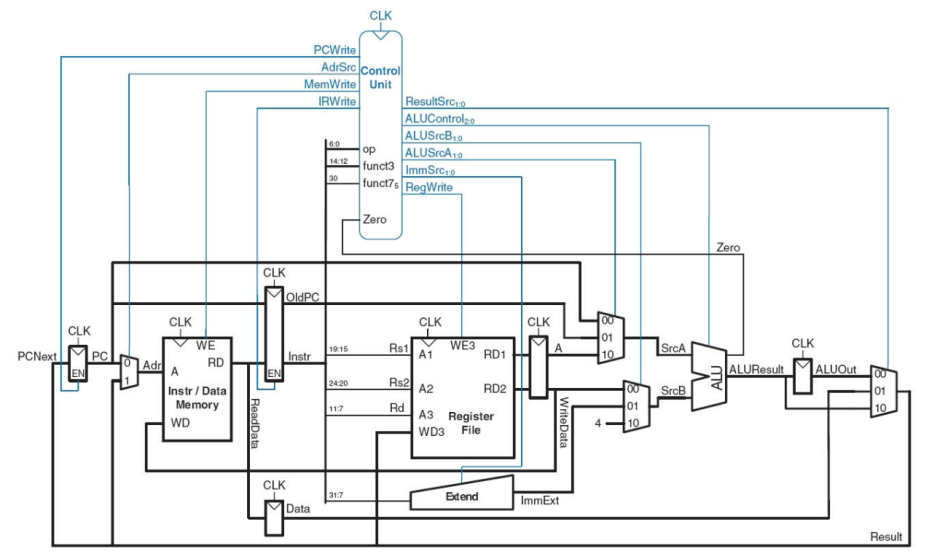
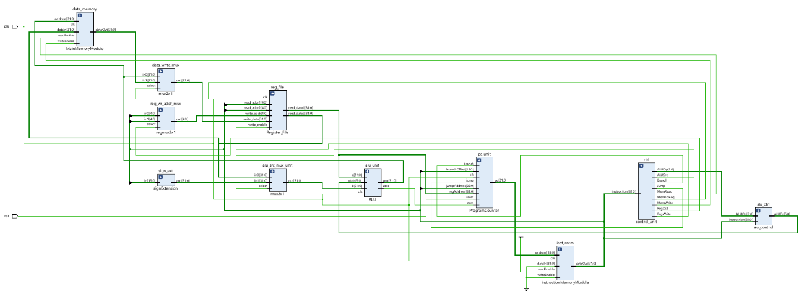
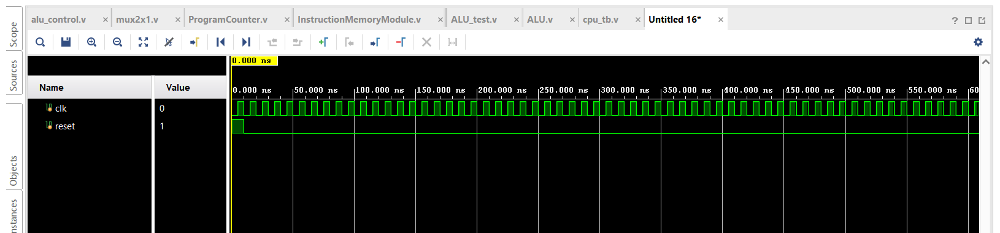
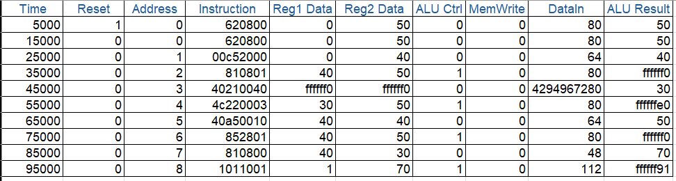

Multicycle RISC Processor Design
Dự án mô phỏng CPU theo mô hình đa chu kỳ bằng Verilog
Mục tiêu
Thiết kế và mô phỏng một bộ xử lý RISC hoạt động theo mô hình Multicycle (đa chu kỳ), tách biệt từng giai đoạn: Fetch, Decode, Execute, Memory, Write Back. Mục tiêu là giảm số lượng phần tử phần cứng cần thiết so với pipelining nhưng vẫn đảm bảo đúng luồng điều khiển và dữ liệu.
Thành phần chính
- ALU, Register File, Control Unit, Memory
- Instruction Memory, Main Memory (RAM)
- Program Counter, Sign Extend, MUX, ALU Control
- Ngôn ngữ: Verilog HDL
- Mô phỏng bằng Vivado 2023.2
Sơ đồ khối CPU
Quy trình hoạt động
- Instruction Fetch: PC gửi địa chỉ đến Instruction Memory, đọc lệnh
- Instruction Decode: Giải mã opcode, đọc 2 thanh ghi từ Register File
- Execute: ALU thực hiện phép toán hoặc địa chỉ tính toán
- Memory Access: Truy xuất RAM nếu cần
- Write Back: Ghi kết quả về thanh ghi
Ảnh minh họa thiết kế
- Schematic thiết kế: 
- Waveform kết quả mô phỏng:  
Video mô phỏng
Kết quả đạt được
- Hỗ trợ các lệnh: ADD, SUB, LW, SW, BEQ, JUMP
- Testbench chạy lệnh mẫu thành công
- ALU, thanh ghi, bộ nhớ hoạt động đúng theo từng chu kỳ
- Mô phỏng rõ ràng từng trạng thái điều khiển